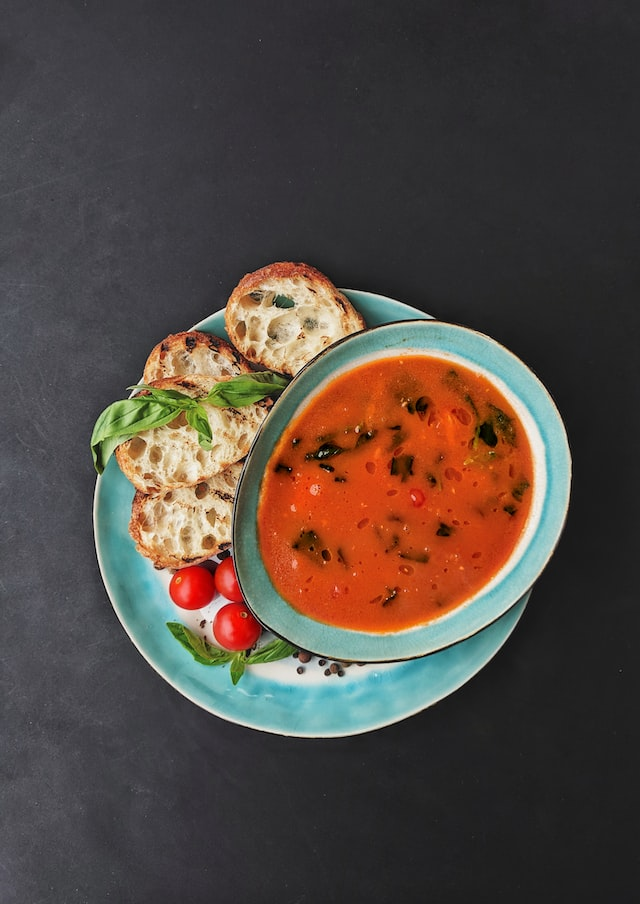

Tomato Soup

Description
A soup as rich as it is simple. The ideal dish for anyone with a healthy appetite and limited cooking skills.
Ingredients
- 4 tomatoes - peeled, seeded and diced
- 4 cups tomato juice
- 14 leaves fresh basil
- 1 cup heavy whipping cream
- ½ cup butter
- salt and pepper to taste
Steps
- Place tomatoes and juice in a stockpot over medium heat; bring to a simmer. Cook until tomatoes have softened, about 30 minutes.
- Remove the pot from heat. Add basil leaves to the pot. Use an immersion blender to purée soup until smooth.
- Stir in heavy cream and butter. Cook and stir over medium heat until butter is melted, about 5 minutes. Do not boil. Season with salt and pepper.